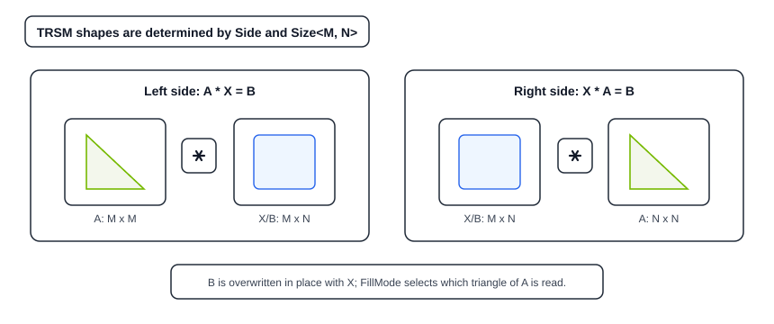
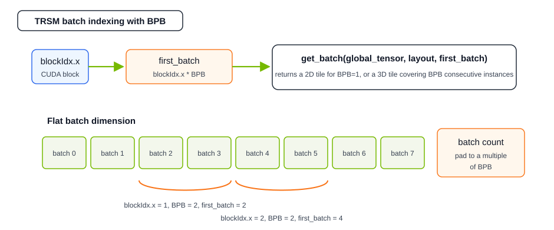
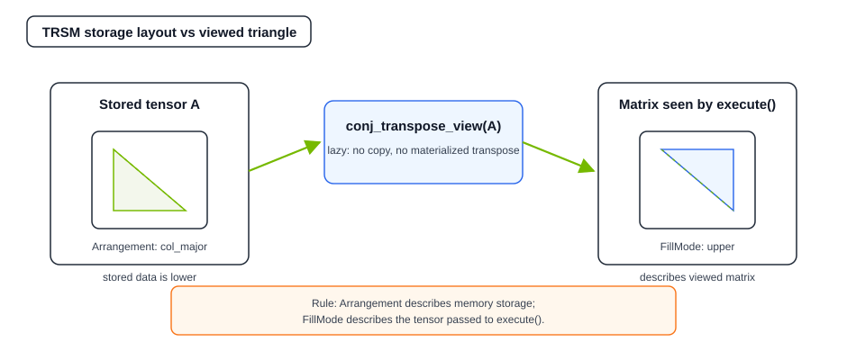

Using cuBLASDx TRSM#
In this introduction, we demonstrate how to perform a triangular solve (TRSM) using the cuBLASDx library. TRSM solves one of two equations for the unknown matrix \(X\):
Left-side: \(A \times X = B\)
Right-side: \(X \times A = B\)
where A is a triangular matrix and B is overwritten in-place with the solution X.
Unlike GEMM, there are no \(\alpha\) / \(\beta\) scalars — the operation is always
\(B \leftarrow A^{-1} B\) (left) or \(B \leftarrow B A^{-1}\) (right).

Side |
Equation |
Shape of |
Shape of |
Batched |
|---|---|---|---|---|
|
|
|
|
|
|
|
|
|
|
Size<M, N> always describes the shape of B and X. Only the square
dimension of A changes with Side.
cuBLASDx provides two execution levels for TRSM:
Block-level (
Block()): the entire CUDA block cooperates to solve a batch of TRSM instances. Data must be staged through shared memory. Best for larger matrices (e.g. M or N ≥ 32) where the problem size justifies shared memory traffic.Thread-level (
Thread()): each CUDA thread independently solves one instance directly from global memory. No shared memory is used or required. Best for small matrices (e.g. M, N ≤ 16) where many independent instances can be solved in parallel. Thread-level operations are supported for TRSM only.
This section is based on the trsm_block, trsm_thread, and trsm_conj_transpose examples included with cuBLASDx.
See the Examples section for additional cuBLASDx samples.
Note
TRSM requires linking against the pre-built libcublasdx.fatbin device-code library. Unlike GEMM, the TRSM implementation is
pre-compiled and linked into the user’s binary at build time via LTO (link-time optimization).
Without it, a static_assert will fire at compile time.
See the Quick Installation Guide for exact CMake setup.
Defining The TRSM Operation#
As with GEMM, a TRSM descriptor is assembled by combining cuBLASDx operators. In addition to the common operators (Size, Precision, Type, Arrangement, SM, and an execution operator), TRSM supports three additional operators (all optional — defaults are shown in parentheses):
Side — whether
Aappears on the left or right (default:side::left).FillMode — which triangle of
Aholds the data; the other triangle is never read (default:fill_mode::lower).Diag —
non_unitmeans diagonal entries are read fromAas usual;unitmeans the diagonal is treated as all-ones without reading it (the stored values are ignored), which is required for unit-triangular matrices in LU factorization (default:diag::non_unit).
Size for TRSM takes only two dimensions, Size<M, N>:
M rows and N columns of the right-hand side matrix B.
The triangular matrix A is square: dimension M for left-side, dimension N for right-side.
#include <cublasdx.hpp>
using namespace cublasdx;
// Left-side, lower-triangular, non-unit TRSM: A * X = B
// A is 32x32, B (and X) is 32x16.
using TRSM = decltype(Size<32, 16>()
+ Precision<float>()
+ Type<type::real>()
+ Function<function::TRSM>()
+ Side<side::left>()
+ FillMode<fill_mode::lower>()
+ Diag<diag::non_unit>()
+ Arrangement<col_major, col_major>()
+ SM<900>()
+ Block());
Block-Level TRSM#
In the block-level API, all threads in a CUDA block cooperate to solve one or more TRSM instances.
Data for A and B must be loaded into shared memory before calling execute().
The result (X) overwrites B in shared memory and must be written back to global memory
by the caller.
Defining The Descriptor#
For a block-level solve, add Block() (and optionally BlockDim<N>() and
BatchesPerBlock<N>()) to the descriptor. If BlockDim is not specified, a default value of TRSM::suggested_block_dim is used and
if BatchesPerBlock is not specified, a default value of 1 is used.
Note
The kernel must be launched with exactly TRSM::block_dim, which equals BlockDim<X, Y, Z> if the
BlockDim operator is specified, or TRSM::suggested_block_dim if not. Unlike GEMM, TRSM does not
allow launching with block dimensions other than specified.
Example descriptor:
#include <cublasdx.hpp>
using namespace cublasdx;
using TRSM = decltype(Size<64, 4>()
+ Precision<float>()
+ Type<type::real>()
+ Function<function::TRSM>()
+ Side<side::left>()
+ FillMode<fill_mode::lower>()
+ Diag<diag::non_unit>()
+ Arrangement<col_major, col_major>()
+ SM<900>()
+ Block()
+ BlockDim<64>());
Batching: BatchesPerBlock#
Each TRSM instance is one independent (A, B) pair: a distinct triangular matrix A
and a distinct right-hand side B. The BatchesPerBlock<N> operator controls how many
such pairs a single CUDA block processes. When omitted, it defaults to 1.
using TRSM = decltype(Size<64, 4>()
+ ...
+ Block()
+ BatchesPerBlock<1>()); // one instance per block
When BatchesPerBlock > 1, the shared-memory tensors passed to execute() carry a batch
index as their third dimension; the layouts returned by TRSM::get_layout_smem_a() and
TRSM::get_layout_smem_b() automatically include the batch stride.

Executing Block-Level TRSM#
A complete block-level TRSM kernel looks like the following.
cublasdx::make_gmem_tensor_batched<Arrangement>(ptr, rows, cols, batch_count) creates a 3D
global-memory tensor of shape rows × cols × batch_count from a flat device pointer.
It is a lightweight descriptor that does not copy data and can be created on the host or device.
Inside the kernel, cublasdx::get_batch(global_tensor, layout, batch_idx) extracts the tile
starting at a given batch index, returning a tensor at the appropriate offset. When
BatchesPerBlock == 1 the returned tile is 2D. When BatchesPerBlock > 1 the returned tile
is 3D and covers BatchesPerBlock consecutive instances, so the batch index for block
blockIdx.x is blockIdx.x * TRSM::batches_per_block.
#include <cublasdx.hpp>
using namespace cublasdx;
template<class TRSM, class GlobalTensorA, class GlobalTensorB>
// TRSM::max_threads_per_block is the maximum block size this descriptor supports.
// Providing it as a launch bound lets the compiler reserve fewer registers per thread,
// which can improve occupancy.
__launch_bounds__(TRSM::max_threads_per_block)
__global__ void trsm_block_kernel(GlobalTensorA global_a, GlobalTensorB global_b) {
extern __shared__ __align__(16) cublasdx::byte smem[];
using T = typename TRSM::a_value_type;
using alignment = cublasdx::alignment_of<TRSM>;
// Guard: skip blocks beyond the batch count.
const unsigned total_blocks = cute::size<2>(global_a) / TRSM::batches_per_block;
if (blockIdx.x >= total_blocks) return;
// Extract the per-block tile from the batched global tensors.
const unsigned first_batch = blockIdx.x * TRSM::batches_per_block;
auto batch_a = cublasdx::get_batch(global_a, TRSM::get_layout_gmem_a(), first_batch);
auto batch_b = cublasdx::get_batch(global_b, TRSM::get_layout_gmem_b(), first_batch);
// Partition shared memory into A and B tensors.
auto [smem_a, smem_b] =
cublasdx::shared_memory::slice<T, T>(smem,
alignment::a, TRSM::get_layout_smem_a(),
alignment::b, TRSM::get_layout_smem_b());
// Load A and B from global memory into shared memory.
cublasdx::copy<TRSM, alignment::a>(batch_a, smem_a);
cublasdx::copy<TRSM, alignment::b>(batch_b, smem_b);
// copy_wait() blocks until all in-flight asynchronous copies issued by this
// block have completed. It must be called before any thread reads smem_a or smem_b.
cublasdx::copy_wait();
// Execute TRSM — B is overwritten in-place with X.
TRSM{}.execute(smem_a, smem_b);
// __syncthreads() ensures all threads have finished writing smem_b before
// the cooperative copy back to global memory begins.
__syncthreads();
// Write the solution back to global memory.
cublasdx::copy<TRSM, alignment::b>(smem_b, batch_b);
}
Launching The Block-Level Kernel#
template<unsigned int Arch>
void trsm_example() {
constexpr unsigned M = 64, N = 4;
constexpr unsigned num_batches = 1024;
using T = float;
using TRSM = decltype(cublasdx::Size<M, N>()
+ cublasdx::Precision<T>()
+ cublasdx::Type<cublasdx::type::real>()
+ cublasdx::Function<cublasdx::function::TRSM>()
+ cublasdx::Side<cublasdx::side::left>()
+ cublasdx::FillMode<cublasdx::fill_mode::lower>()
+ cublasdx::Diag<cublasdx::diag::non_unit>()
+ cublasdx::Arrangement<cublasdx::col_major, cublasdx::col_major>()
+ cublasdx::SM<Arch>()
+ cublasdx::Block()
+ cublasdx::BlockDim<64>());
// Build 3D batched global-memory tensors on the host.
auto global_a = cublasdx::make_gmem_tensor_batched<cublasdx::col_major>(d_A, M, M, num_batches);
auto global_b = cublasdx::make_gmem_tensor_batched<cublasdx::col_major>(d_B, M, N, num_batches);
// Compute required shared memory.
const unsigned smem_bytes =
cublasdx::make_shared_storage_calculator()
.add(cublasdx::alignment_of<TRSM>::a, sizeof(T), TRSM::get_layout_smem_a())
.add(cublasdx::alignment_of<TRSM>::b, sizeof(T), TRSM::get_layout_smem_b())
.get();
using ga_t = decltype(global_a);
using gb_t = decltype(global_b);
auto kernel = trsm_block_kernel<TRSM, ga_t, gb_t>;
// CUDA limits dynamic shared memory to 48 KB by default on most architectures.
// This call raises the limit for this specific kernel to the amount we actually need.
CUDA_CHECK_AND_EXIT(cudaFuncSetAttribute(
kernel, cudaFuncAttributeMaxDynamicSharedMemorySize, smem_bytes));
// num_batches must be divisible by batches_per_block; pad it before this point if needed.
const unsigned num_blocks = num_batches / TRSM::batches_per_block;
kernel<<<num_blocks, TRSM::block_dim, smem_bytes>>>(global_a, global_b);
CUDA_CHECK_AND_EXIT(cudaGetLastError());
CUDA_CHECK_AND_EXIT(cudaDeviceSynchronize());
}
Thread-Level TRSM#
In the thread-level API (Thread()), each CUDA thread independently solves one TRSM instance.
Matrices A and B can be read and written directly from global memory — no shared memory is
required.
Defining The Descriptor#
Replace Block() with Thread() and omit BlockDim and BatchesPerBlock:
#include <cublasdx.hpp>
using namespace cublasdx;
// Right-side, lower-triangular, non-unit TRSM: X * A = B
// A is 12x12, B (and X) is 10x12.
using TRSM = decltype(Size<10, 12>()
+ Precision<double>()
+ Type<type::real>()
+ Function<function::TRSM>()
+ Side<side::right>()
+ FillMode<fill_mode::lower>()
+ Diag<diag::non_unit>()
+ Arrangement<col_major, col_major>()
+ SM<900>()
+ Thread());
Executing Thread-Level TRSM#
Each thread extracts its own 2D tile from 3D batched global tensors and calls execute()
directly on them:
template<class TRSM, class GlobalTensorA, class GlobalTensorB>
__global__ void trsm_thread_kernel(GlobalTensorA global_a, GlobalTensorB global_b) {
const unsigned tid = blockIdx.x * blockDim.x + threadIdx.x;
const unsigned total_items = cute::size<2>(global_a);
if (tid >= total_items) return;
// Each thread gets its own 2D tile.
auto batch_a = cublasdx::get_batch(global_a, TRSM::get_layout_gmem_a(), tid);
auto batch_b = cublasdx::get_batch(global_b, TRSM::get_layout_gmem_b(), tid);
// Execute TRSM directly on global memory tensors — no shared memory needed.
TRSM{}.execute(batch_a, batch_b);
}
Launching The Thread-Level Kernel#
template<unsigned int Arch>
void trsm_thread_example() {
constexpr unsigned M = 10, N = 12;
constexpr unsigned num_batches = 300;
constexpr unsigned threads_per_block = 64;
using T = double;
using TRSM = decltype(cublasdx::Size<M, N>()
+ cublasdx::Precision<T>()
+ cublasdx::Type<cublasdx::type::real>()
+ cublasdx::Function<cublasdx::function::TRSM>()
+ cublasdx::Side<cublasdx::side::right>()
+ cublasdx::FillMode<cublasdx::fill_mode::lower>()
+ cublasdx::Diag<cublasdx::diag::non_unit>()
+ cublasdx::Arrangement<cublasdx::col_major, cublasdx::col_major>()
+ cublasdx::SM<Arch>()
+ cublasdx::Thread());
auto global_a = cublasdx::make_gmem_tensor_batched<cublasdx::col_major>(d_A, N, N, num_batches);
auto global_b = cublasdx::make_gmem_tensor_batched<cublasdx::col_major>(d_B, M, N, num_batches);
using ga_t = decltype(global_a);
using gb_t = decltype(global_b);
const unsigned num_blocks = (num_batches + threads_per_block - 1) / threads_per_block;
trsm_thread_kernel<TRSM, ga_t, gb_t><<<num_blocks, threads_per_block>>>(global_a, global_b);
CUDA_CHECK_AND_EXIT(cudaGetLastError());
CUDA_CHECK_AND_EXIT(cudaDeviceSynchronize());
}
Tensor Views And Conjugate Transpose#
The TransposeMode operator is deprecated and does not work with TRSM. To express
transposition or conjugation for TRSM matrices, use the tensor view wrappers provided by cuBLASDx instead.
Tensor views are lazy descriptors that reinterpret or transform the elements of an existing tensor
on access without copying data. Simply wrap the shared-memory (or global-memory for
thread-level) tensor before passing it to execute():

// Solve A^H * X = B (conjugate-transpose of A):
TRSM{}.execute(cublasdx::conj_transpose_view(smem_a), smem_b);
// Solve A^T * X = B (transpose only):
TRSM{}.execute(cublasdx::transpose_view(smem_a), smem_b);
// Solve A * X = B (no transformation, default):
TRSM{}.execute(smem_a, smem_b);
The four available tensor view functions are:
cublasdx::transpose_view(tensor)— swaps rows and columns (lazy, no data copy).cublasdx::conjugate_view(tensor)— negates imaginary parts on access; no-op for real types.cublasdx::conj_transpose_view(tensor)— Hermitian adjoint (\(A^H\)); combines the above two.cublasdx::make_transform_view(tensor, functor)— applies any custom stateless element-wise functor.
Note
The Arrangement operator in the TRSM descriptor always describes the storage layout of
the data in memory, regardless of any tensor view applied at the call site. FillMode
describes which triangle of A is read after applying the tensor view passed to
execute(). For example, if storage is lower-triangular but the call uses
conj_transpose_view(smem_a), the descriptor should describe the triangle visible through
that view.
Warning
The TransposeMode operator is deprecated since cuBLASDx 0.2.0 and is not supported for
TRSM. Using it with TRSM will result in a compile-time error. Use Arrangement together
with tensor views as shown above.
Compilation#
TRSM requires linking against the pre-built libcublasdx.fatbin device-code library in addition to the standard cuBLASDx includes.
For instructions on how to compile programs with cuBLASDx TRSM, see the
Quick Installation Guide